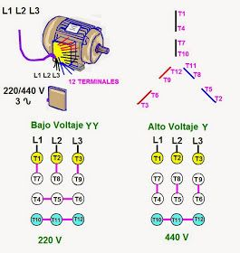

Tipos de motores
Los motores se crearor con la serteza de ayudar al ser humano con los trabajos manual mecanico para mas efisiencia y menos desgaste del cuerpo conpuesto por un bobinado de cobre que, gracias al fenomeno electrico llamado campo Magnetico, utiliza la fuerza dada por ese campo haciendola rotar hacia una direccion. Ya que en algunos casos se requeria de no solo una direccion de movimiento se planteo una idea para este problema, asi se creo el motor Trifasico.
- Al ser de solo una direccion esto implica mas fuerza
- Solo tiene una direccion de rotacion
- Multi uso
- ETC
Motor Monofasico
Los motores monofasicos son motores antiguos echos para girar hacia un solo lado ya que este contiene solo 1 linea + 1 neutro y una puesta a tierra
Estos motores se utilizaban para las sintas transportadoras de 1 sola direccion o otras funsiones con solo una direccion de ejecucion.

Presio aproximado de = $159.497
Esto va variando segun cuantos HP genere (caballos de fuerza).
Ventajas
Desventajas
Motor Trifasico
Los motores trifasicos son motores de 3 lineas + un puesto a tierra y un neutro, esto es para equilibrar las tres lineas y no halla un desfasaje entre ellas
este motor sirve para maquinas que son de dos tipos de movimientos como puede ser una sinta transportadora automotizada, un ascensor, etc.

Estos motores tienen un presio mas elevado que los motores monofasicos por el tiempo de fabricacion, el presio va a varias segun cuantos HP necesiten
este costo se aproxima actualmento a = $241.550
Informacion sacada de Mercado Libre